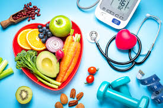
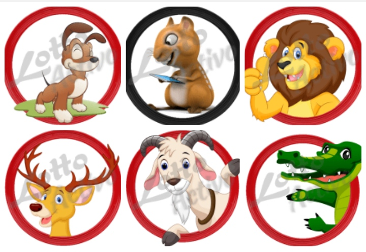
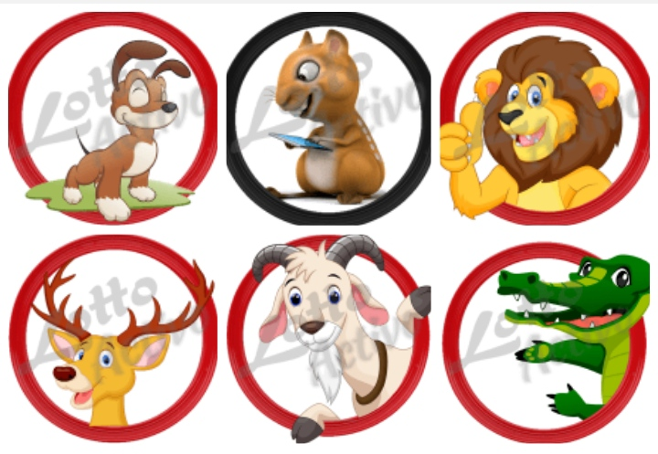
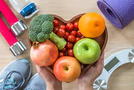
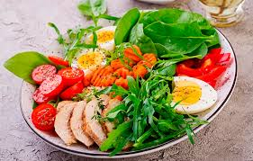
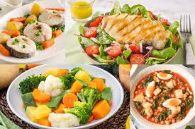

Conoce más sobre la Salud❤️
consejos para una vida saludable,hábitos saludables para el día a día,cómo mejorar la calidad de vida,bienestar integral, rutina saludable mañana,dolor de cabeza frecuente causas,cómo bajar la fiebre en adultos,remedios para el insomnio
!La salud (del latín salus, -utis) es un estado de bienestar que puede ser visto a nivel subjetivo (un ser humano asume como aceptable el estado general en el que se encuentra) o a nivel objetivo (se constata la ausencia de enfermedades o de factores dañinos en el sujeto en cuestión).¡
¿Qué es la salud?:

La salud es un estado de completo bienestar físico, mental y social, no solamente la ausencia de enfermedad o dolencia, según la definición presentada por la Organización Mundial de la Salud (OMS) en su constitución aprobada en 1948.
Hora Actual
Cargando...
Cargando...
"🚨3 SUPER FIJOS"
 
Pago Movil.
Banco Mercantil: 0105.
Telef: 04248671967.
C.I: 14055604.
Monto: 100Bs
Enviar su capture al 04248671967

Pago Movil.
Banco Mercantil: 0105.
Telef: 04248671967.
C.I: 14055604.
Monto: 100Bs
Enviar su capture al 04248671967

¡Selva Plus".!
"VER Informacion"
¡Loto Rey".!
"VER Informacion"Cómo comer saludable.
fatiga crónica qué puede ser,mareos y náuseas causas,alimentación saludable para familias,dieta equilibrada semanal, superalimentos y sus beneficios,cómo leer etiquetas nutricionales,recetas saludables y fáciles,síntomas de menopausia y alivio,
!¿Cómo comer saludable sin aburrirte o comer siempre lo mismo? Muy fácil, conociendo la pirámide de la nutrición y encontrando nuevas recetas para mantenerte en tu peso óptimo y con todos los nutrientes que necesitas. Si conoces el nivel óptimo de cereales, proteínas de origen vegetal, fruta, etcétera, te será sencillo hacer nuevas recetas respetando los porcentajes. Podrás hacer platos verdaderamente deliciosos y rápidos, e incluso, incluir algún capricho como un dulce o una bolsa de patatas sin sentirte culpable.¡
alimentos sabrosos y saciantes:

Es decir, los consejos para saber cómo comer saludable son más fáciles de lo que imaginas y para seguirlos no tienes que renunciar a tus platos favoritos.

¡La Granjita".!
"VER Informacion"
!Ruleta Royal".!
"VER Informacion"
¡Granjazo Millonario".!
"VER Informacion"
¡Granja Millonaria".!
"VER Informacion"
!Loto Activo".!
"VER Informacion"
¡Guacharo Activo".!
"VER Informacion"Dr.Animalitos / 06 ene, 2025
❤️¿Una dieta equilibrada: la pirámide de alimentación:
salud hormonal femenina,cuidados durante el embarazo,ciclo menstrual irregular causas

Cereales, legumbres, tubérculos...
Los cereales en los últimos años han adquirido una mala fama inmerecida, pero son totalmente necesarios porque son ricos en hidratos de carbono. Los hidratos de carbono están disponibles en los cereales, en algunas legumbres, en los tubérculos… Dado que nos ofrecen mucha energía lo ideal es tomarlos por la mañana o al medio día. Por ejemplo, una lasaña, un plato de macarrones, unas tostadas, lentejas, un potaje de garbanzos…

Frutas y verduras Si te preguntas cómo comer saludable, la mejor respuesta es: consumiendo muchas piezas de fruta y verdura a diario. De hecho, cinco piezas pueden no ser suficientes. Eso sí, dado que muchas frutas contienen altos niveles de azúcar e hidratos de carbono, conviene consumirlas por la mañana o al medio día y antes de las comidas. Y olvídate de la fruta en almíbar o de los zumos industriales. Haz tus propios zumos y batidos caseros con ayuda de alguna licuadora. Respecto a las verduras, todas son saludables. Estas son algunas con pocas calorías para que puedas aumentar su consumo hasta saciarte sin engordar un solo kilo: Cebolla Tomate Pepino Zanahorias Coliflor Espárragos Pimiento verde Calabaza Calabacín Apio